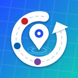
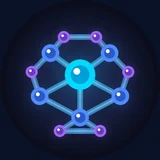

I hem och fastigheter
Produkter för det smarta hemmet på Thread och Matter, smarta fastigheter där inomhusklimat, energi och vatten hålls under uppsikt, växter och gröna väggar, och appen som gör en byggnads system begripliga för dem som bor där.
Innovating tomorrow, today
RazTech Innovations är en svensk IoT-produktstudio och konsultfirma som arbetar med företag i hela Europa. Vi bygger egna uppkopplade produkter och appar, och vi hjälper industri, städer och fastighetsägare att göra sensorer, realtidsdata och AI till tjänster som människor litar på.
Det här är våra egna produkter, designade och byggda av RazTech. Fyra finns i App Store i dag. Resten är på väg, och vi säger vilka. Arbete vi gör åt kunder visas inte här.
Öppna data i realtid, till nytta för dem som rör sig i staden.

Kommer till App Store
Sverige i realtid. Bussar, tunnelbana, tåg och båtar i 15 län, köer och restider på Stockholms vägar, väglag, regnradar och störningar på en karta för iPhone, allt hämtat från öppna data.
Planeras
Hushållets alla fordon på ett ställe: status, besiktning och skatt, och servicehistorik, med ett tryck till rätt officiell e-tjänst. En fristående app för svenska fordonsägare, planerad för iPhone och Android.
Uppkopplade saker som säger sanningen om sig själva och tar hand om det som växer.

I App Store
Ditt Thread-nätverk, svart på vitt. Se vilka enheter i det smarta hemmet som är på Thread, vilka gränsroutrar nätverket har och när en enhet verkligen har gått offline. För iPhone, iPad och Apple Watch. Det appen inte kan läsa visar den inte.
Under utveckling
En smart kruka som förenar skandinavisk keramik med sensorer för jordfukt, ljus och temperatur. Den vattnar vid rötterna i korta, uppmätta pulser i stället för att dränka krukan, så att växten får vad den behöver och mindre vatten går till spillo. Designad i Stockholm.
Programvara för dem som organiserar omsorg, med reglerna inbyggda och förklarade.
Under utveckling
En lugn och tydlig plats för att driva personlig assistans i Sverige. Schemaläggning och bemanning, beslut och beviljade timmar, tidrapportering och arbetstidsregler som varnar i sitt sammanhang och förklarar sig på klarspråk, på svenska och engelska.
Spel som respekterar spelarens tid, uppmärksamhet och plånbok.
I App Store
Ett mysigt pusselspel i pixelstil där det gäller att få hem alla. 340 trädgårdar i tjugofyra världar, ett nytt pussel varje dag och inga tidsgränser. För iPhone och iPad, och dagens pussel går att spela i webbläsaren.
I App Store
Ett strategispel i realtid i fantasymiljö för iPhone och iPad. Bygg en by, smid ett kungarike och marschera mot din rival. Gratis att börja, ett enda köp låser upp hela spelet, och det finns ingen reklam.
I App Store
Ett lugnt djur- och pusselspel för barn mellan 6 och 10 år. Kläck en Juno, ta hand om den och lös snälla pussel som väcker en svävande ö. Ingen reklam, ingen spårning och ingen stress, uppläst på 21 språk.
En uppkopplad produkt är en kedja, och den är aldrig starkare än sin svagaste länk. Vi arbetar själva med varje länk: sensorn, radion, den inbyggda programvaran, molnet och skärmen i någons hand. I ett hem slutar kedjan vid en växt eller en lampa. I industrin slutar den vid en pump, en mätare eller en produktionslina, där ett missat mätvärde kostar pengar.
Rätt sensor, placerad där sanningen finns. GRODD mäter jordfukt, ljus och temperatur vid roten, där besluten om vattning fattas.
Thread, Matter, HomeKit och wifi. Vi mäter radion i stället för att lita på den: ThreadMappers sond läser själva Thread-radion.
Inbyggd programvara som agerar på sina egna mätvärden och uppdateras trådlöst. Sondens programvara publiceras med kontrollsummor, så att vem som helst kan verifiera det som installeras.
Telemetri som strömmas, lagras och blir till tröskelvärden, larm och historik. GRODD anpassar varje växts vattning efter de data den skickar.
En skärm som säger vad som är fel och vad som ska göras först. ThreadMapper betygsätter ett nätverk från A till F och listar åtgärderna med underlaget bakom var och en.
Produkter för det smarta hemmet på Thread och Matter, smarta fastigheter där inomhusklimat, energi och vatten hålls under uppsikt, växter och gröna väggar, och appen som gör en byggnads system begripliga för dem som bor där.
Samma kedja i industriell skala: tillståndsövervakning och prediktivt underhåll för maskiner och pumpar, mätning av energi och vatten, spårning av tillgångar, och eftermontering som kopplar upp äldre utrustning. Flottor av enheter i fält övervakas och uppdateras på distans, och varje larm går att spåra till mätvärdet bakom.
Vi arbetar med europeiska företag, på engelska och svenska, och vi bygger för europeiska krav: inbyggt dataskydd enligt GDPR, säkerhet byggd för cyberresiliensförordningen och NIS2, data som stannar i EU när projektet kräver det, och säkerhetsuppdateringar planerade för enhetens hela livslängd.
Vi ger råd om samma saker som vi själva bygger, åt företag i hela Europa. Du får en partner som kan ta en idé från ett första samtal till en produkt i människors händer, och som vet var varje steg brukar gå fel.
Sverige publicerar några av världens bästa öppna data. Det mesta når aldrig den som väntar på bussen eller funderar på att ta bilen. 360Maps är vårt svar: en karta som samlar ett dussin offentliga källor och uppdateras medan du tittar.
Vi tar samma arbetssätt till kommuner, trafikhuvudmän och fastighetsägare. Börja med de data ni redan har, visa dem ärligt, och bygg tjänsten kring frågorna människor ställer varje dag.
Vi visar hellre vad våra produkter gör än lovar saker om planeten. Det här är valen vi gör, och var du kan kontrollera dem.
360Maps planerar resan med bil, kollektivtrafik, cykel eller till fots utifrån trafiken som den är just nu. Alternativen till bilen är alltid ett tryck bort.
GRODD doserar vatten i korta pulser vid rötterna, styrt av en jordfuktssensor, i stället för att dränka hela krukan på bestämda tider. Växten får vad den behöver och mindre vatten går till spillo.
JUNO, Crownfall, ThreadMapper och 360Maps kräver inget konto. JUNO och 360Maps har ingen reklam och ingen spårning. Mindre data som flyttas och lagras betyder mindre energi som går åt.
ThreadMapper hjälper dig att ta reda på varför en enhet föll ur nätverket innan du byter ut den. MyVehicles planeras kring en servicehistorik som följer bilen till nästa ägare.
Den här sidan är ren HTML och CSS med en enda typsnittsfil. Inga kakor, ingen spårning, ingen besöksstatistik och inget som laddas från någon annan.
ThreadMapper visar ingen signalstyrka för Thread-tillbehör, eftersom iOS inte ger appar någon att läsa. 360Maps anger källan till allt på kartan. Det vi inte kan mäta ritar vi inte.
AssistanceCare varnar för ett arbetstidsproblem medan det fortfarande går att åtgärda. JUNO och Pixel Home har inga tidsgränser. Bra programvara sänker pulsen hos den som använder den.
JUNO har ingen reklam, ingen spårning och inget konto. Crownfall sparar dina spel på din enhet. Vi samlar in det en funktion behöver för att fungera, och säger det med enkla ord.
JUNO läser upp varje rad på 21 språk. Pixel Home märker varje färg med en symbol, så att inget pussel hänger på att kunna skilja nyanser åt. Tillgänglighet är en del av den första designen, inte något som lagas i efterhand.
Berätta med några rader vad du vill åstadkomma, på svenska eller engelska. Vi svarar på alla meddelanden.
Skriver du hellre från din egen mejlapp?
Mejla raztechsupport@icloud.com
Använder du någon av våra appar? Varje produkts webbplats har egna sidor för support och integritet, och samma adress når oss.